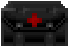
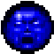
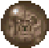

【Home Page】
| 底下所介紹的各類物品皆是被地獄大軍侵入破壞時而散落在每個地區的某些地方， 有些是能增強保護你的裝備，有些是當你生命垂危時刻，適時的讓你回復生機， 他們非常的實用，所以好好的善用它們，希望能幫助你早日剷除地獄裡與火星基地上的惡魔與怪物。 |
|---|
| Chain Saw 鏈鋸： 想要享受殺戮的快感嗎？這是我認為最刺激的武器...(一不小心會趴~~~)。 |
|
| Pistol 手槍： 消耗：AMMO 遊戲一開始最原始的武器，對付小怪物綽綽有餘了。 |
|
| Shotgun 單管散彈槍： 消耗：SHELL (彈孔數：7) 這是DOOM1代最常用到的武器之一吧，威力不弱、又很好用...是個外出必備的好武器。 |
|
| Super Shotgun 雙管散彈槍： 消耗：SHELLS 二發 (彈孔數：20) 這是DOOM2代最常用到的武器之一吧，又猛又實用，打小怪一次可殺好幾隻。是隨時都要準備的武器。 |
|
| Chaingun 鏈槍： 消耗：AMMO 速度快、殺怪也快，但相對地...子彈的消耗速率也很快...。 |
|
| Rocket Launcher 火箭發射器： 消耗：ROCKET 當有一群小怪在聚會時，這把武器就派上用場了。但...切記...別近距離發射ㄚ~~~。 |
|
| Plasma Rifle 電漿槍： 消耗：CELL 這把是殺HP多的怪物的好武器，但和鏈槍一樣...子彈的消耗速率...XD。 |
|
| BFG 9000 激光炮： 消耗：CELLS 40發 這把奇怪的武器 (BFG=BIG FREAK GUN???)直得留給大家細細體驗...。 |
|
| Ammo Clip 彈匣：
手槍與鏈砲的彈藥，一般散落在很多區域的各個角落，每個彈匣有 4 發子彈。 |
|
| Box Of Bullets 彈藥箱：
手槍與鏈砲的彈藥，一般散落在很多區域的各個角落，每箱有 50 發子彈。 |
|
| Shotgun Shells 散彈槍彈藥：
散彈槍的彈藥，一般散落在很多區域的各個角落，每組有 4 發散彈。 |
|
| Box Of Shells 散彈槍彈藥盒：
散彈槍的彈藥，一般散落在很多區域的各個角落，每盒有 24 發散彈。 |
|
 |
Rockets 火箭彈：
火箭筒的彈藥，有時會單顆的散落在很多區域的各個角落。 |
| Box Of Rockets 火箭彈藥箱：
火箭筒的彈藥，一般散落在很多區域的各個角落，每箱有 8 顆火箭彈。 |
|
| Energy Cell 電池：
電漿槍 與 BFG9000 的電力能源，一般散落在很多區域的各個角落，每個有 20 點電力。 |
|
| Bulk Cell 電瓶：
電漿槍 與 BFG9000 的電力能源，一般散落在很多區域的各個角落，每個有 100 點電力。 |
|
| Health Bonus 生命力藥水： 每喝一瓶可以讓你的生命值上升 1%，最大值可以達到生命值 200%。 |
|
| Stimpack 急救包： 小型的急救包裡面包含少量的緊急醫療藥物，如果你的生命值還未達到 100% ，每一包可以讓你的生命值上升 10%。 |
|
| Medipack 醫療箱： 大型的醫療箱裡面擁有各種醫療用品，如果你的生命值還未達到 100% ，每一箱可以讓你的生命值上升 25%。 |
|
|  | Berserker Pack 狂戰箱： 能讓你的拳頭成為非常具有殺傷威力的武器用來對付接下來的任務，當你吃到狂戰箱時畫面會立即呈現紅的顏色。 |
| Armor Bonus 護甲： 如果你的裝甲值還未達到 200% 最大值，每吃一個可以讓你的裝甲值上升 1%。 |
|
| Security Armor 安全裝甲： 一般部隊的標準型裝甲衣，適合一般輕裝作戰的戰場，每穿一件可以讓你的裝甲值上升至 100%。 |
|
| Combat Armor 戰鬥裝甲： 特種陸戰隊的重型裝甲衣，非常適合在與異形怪物戰鬥的戰場，每穿一件可以讓你的裝甲值上升至 200%。 |
|
|  | Soul Sphere 靈魂球： UAC 科技公司所研發 (尚未公開) ，補充體力藥丸，每吃一顆可以增加你 100% 生命值，最多可以達到 200%。 |
|  | Mega Sphere 超級球： UAC 科技公司所研發 (尚未公開) ，終極強效的體力裝甲補充藥丸，每吃一顆可以將你的 生命值 與 裝甲值 提昇到 200% 。 |
| Invisibility 模糊球： UAC 科技公司所研發 (尚未公開) ，每吃一顆可以將你的身體變為半透明的模糊狀態，讓敵人很難看出你的形體所在， 不過有效時間僅能維持 60 秒，過後便會逐漸恢復原狀。 |
|
| Invulnerability 無敵球： UAC 科技公司所研發 (尚未公開) ，這是顆威力強大的物品，每吃一顆可以讓你在短暫的時間之內保持為無敵狀態， 尤其當你在執行一些會讓你性命垂危的任務或是逃命的時候特別好用。 |
|
| Cards & Skull 磁卡與骷髏頭： 有些地方的門是鎖住的必須使用正確的磁卡才能開啟，這些磁卡在一些地獄的區域是以骷髏頭的外型存在的， 顏色區分為 紅，藍，黃 三種顏色。當然啦！你得冒著生命的危險並花費一番功夫才能拿到。 |
|
| Computer Map 電腦區域地圖： 取得之後便可以對你目前所在的關卡裡所有的地形地物完全一覽無遺不會有死角， 不過僅限當時所在關卡才能發揮功能。 |
|
| Light Amplifying Visor 夜視鏡： 夜視鏡可以讓你在短時間內將黑暗無光線的地方，看起來有如正常環境的亮度條件一般。 |
|
| Back Pack 大背包： 取得大背包之後，除了可以稍微補充彈藥之外，還可讓你的攜帶彈藥數量上限成為原來的兩倍。 |
|
| Radiation Suit 抗輻射衣： 這是一件全罩式的防護衣，他可以保護你不會受到一些像是 熔岩, 輻射污染泥的傷害， 不過有效防護時間僅能維持 60 秒，過後就會回復無防護狀態。 |
|
| Barrel 桶子： 它裡頭通常儲放著核廢料；化學污染物；燃油，是非常不穩定的易爆物質，不過有時候可以射擊它， 藉由引爆它的方式來達到炸傷異形的目的，效果有時候還很不錯。 |
|
| Flaming Barrel 燃燒的桶子： 它通常燃燒著核廢料；化學污染物；燃油，是被引燃的燃燒桶子，可以射擊它，但它只是個不會動的擺飾...XD。 |